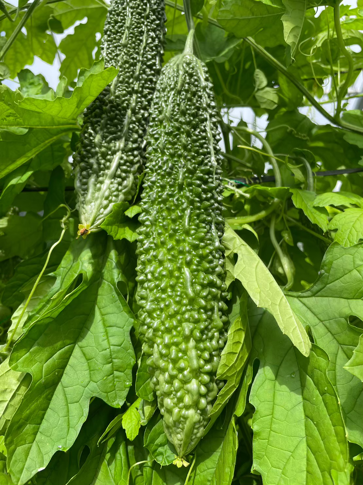
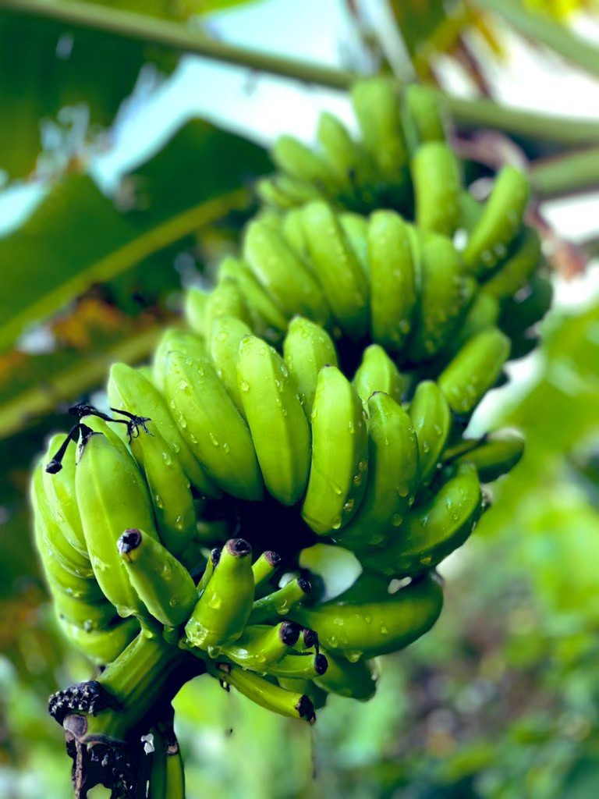
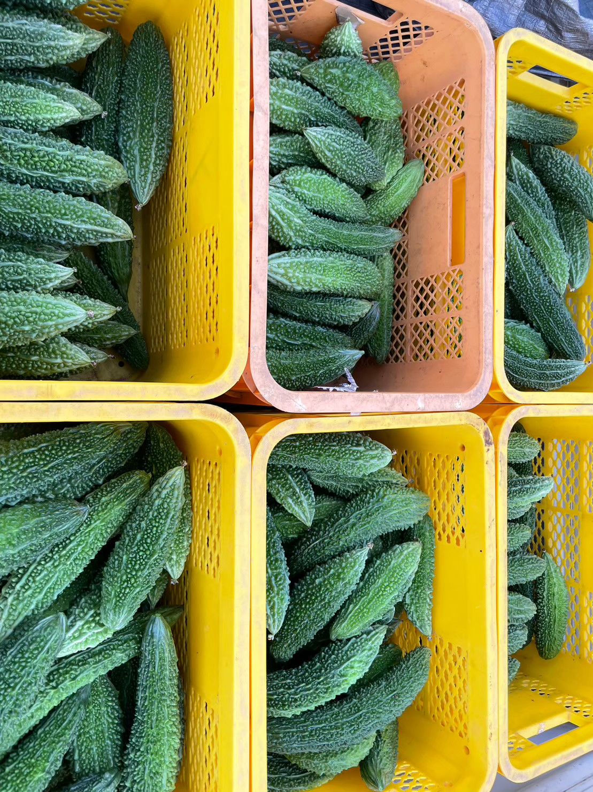

Shipment
島野菜の定期出荷
ゴーヤ、オクラ、ピーマンなど、旬の野菜を収穫状況に合わせて出荷しています。
Achievements
石垣島の畑から、食卓・店舗・地域へ。株式会社GYの取り組みを紹介します。
Our Work
青果の出荷、飲食店・小売店への納品、畑の見学受け入れなど、石垣島の農産物を中心に事業を広げています。
実績は今後の更新に合わせて追加しやすいよう、カード形式と年表形式で整理しています。
Cases
掲載内容はサンプル文言です。実際の取引先名や数量が確定したら差し替えられます。

Shipment
ゴーヤ、オクラ、ピーマンなど、旬の野菜を収穫状況に合わせて出荷しています。

Wholesale
店舗で扱いやすい規格や量を相談しながら、農産物の納品に対応しています。

Visit
天候や作業状況に合わせて、畑の見学や農作業の紹介を行っています。

Local
石垣島の気候に合う品目を選び、少量多品目で継続的に栽培しています。
Timeline
農園、商品、つくり手の写真を整理し、発信の土台を整備。
ゴーヤ、紅芋、島バナナなど、季節に合わせた品目を紹介。
畑の見学や取引相談につながる情報設計を強化。